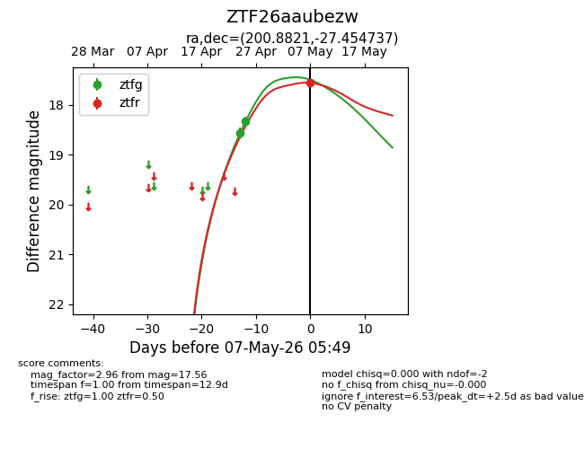
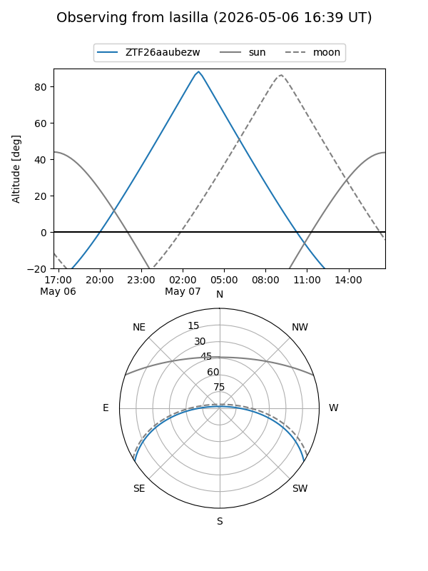
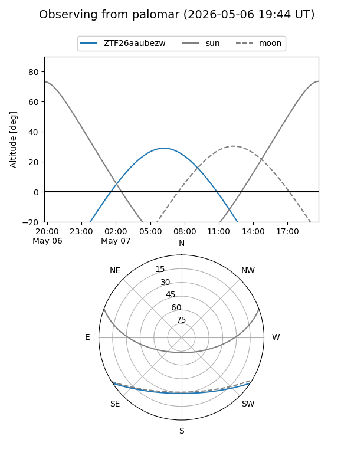
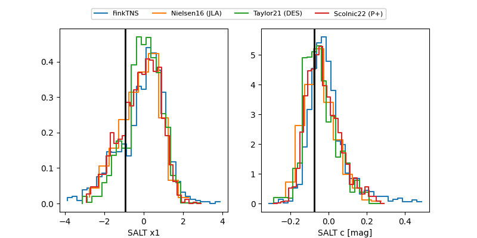

ZTF26aaubezw
Target ZTF26aaubezw at 2026-05-07 05:51
Aliases and brokers:
FINK: link
Lasair: link
ALeRCE: link
alt names
ZTF26aaubezw (ztf,fink_ztf)
Coordinates:
equatorial (ra, dec) = 200.8821,-27.45474
equatorial (HMS+DMS) = 13:23:31.71,-27:27:17.05
galactic (l, b) = (311.6144,+34.87541)
Flags:
Photometry:
last ztfg=18.33, ztfr=17.56
2 ztfg, 1 ztfr detections
Lightcurve

Visibility


Additional plots
